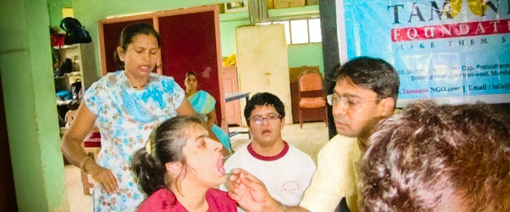
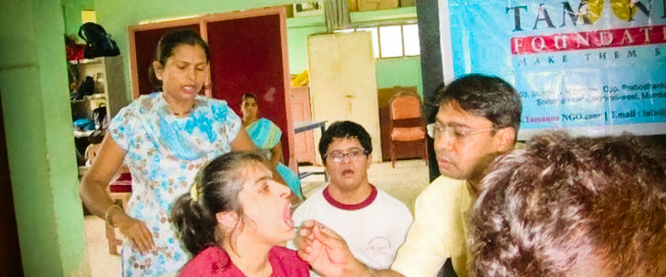

“ It's not how much we give but how much love
we put into giving. ”
- Mother Teresa
Supporters
"The hand that helps are holier then the lips that pray". Tamanna Foundation is indeed thankful to all the donors and supporters who have extended their support and made every drop count in this ocean of noble act. We would like to express gratitude and look forward to continued and assured support.
- Leharchand Kesarimalji
- Deserve Exim Pvt. Ltd
- Aesthetic Ravers
- Shah & Shah Co.
- Babulal Jamaji
- Devichand Jamaji